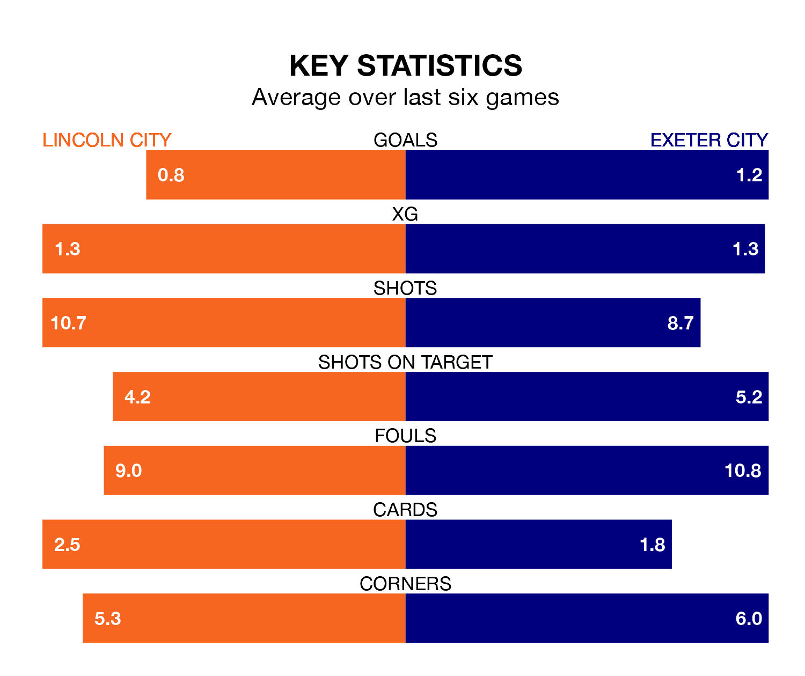

Lincoln City face Exeter City on Saturday seeking to protect their long unbeaten run in EFL League One.
The Imps are unbeaten in six, with two wins and four draws, ahead of the 3pm kick-off.
They face an Exeter team who have won four and lost two over the same number of games.
In the last 10 years, Lincoln and Exeter have played each other on nine occasions. Lincoln won two of them, Exeter three, and they drew four times.
On average, the Imps scored 1.2 goals and Exeter 1.2 in those matches.
Their last meeting was on October 28, when they played out a 1-1 draw.
With Lukas Jensen between the sticks, Lincoln can rely on one of the league's safest pair of hands. He has kept 11 clean sheets in his 32 appearances this season, and only two other 'keepers – Portsmouth's Will Norris and Bolton Wanderers' Nathan Baxter – have been able to prevent the opposition scoring on more occasions in EFL League One.
In Exeter's net, Viljami Sinisalo has 10 clean sheets in 32 games. He has conceded a goal every 72 minutes, 40% more often than the 99 minutes between goals for Jensen.
With 25 goals in 33 games so far this season, Exeter City are the league's third-lowest scorers with 0.8 goals per game. And they are conceding more than average, letting in 46 goals at a rate of 1.4 per game.
Lincoln City are also below average scorers, with 1.1 goals per game, compared to a league average of 1.3. They have conceded 1.0 goal per game.
The away side are 15th in the table after 33 games, of which they have won 11 and drawn six, earning 39 points.
The Imps are three places ahead of Exeter in 12th, with 10 wins and 12 draws putting them on 42 points.
Lincoln's last match was on Tuesday, a 1-1 draw against Charlton Athletic, with Recco Hackett-Fairchild getting the goal for the Imps.
Exeter lost 3-0 against Derby County last time out, also on Tuesday.
Updated: 13:04 (UTC), 16/02/24